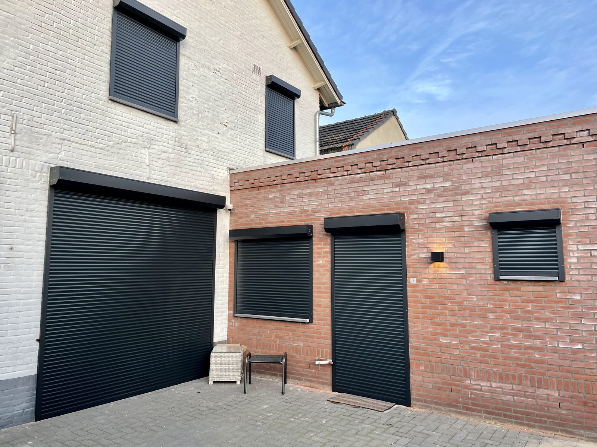
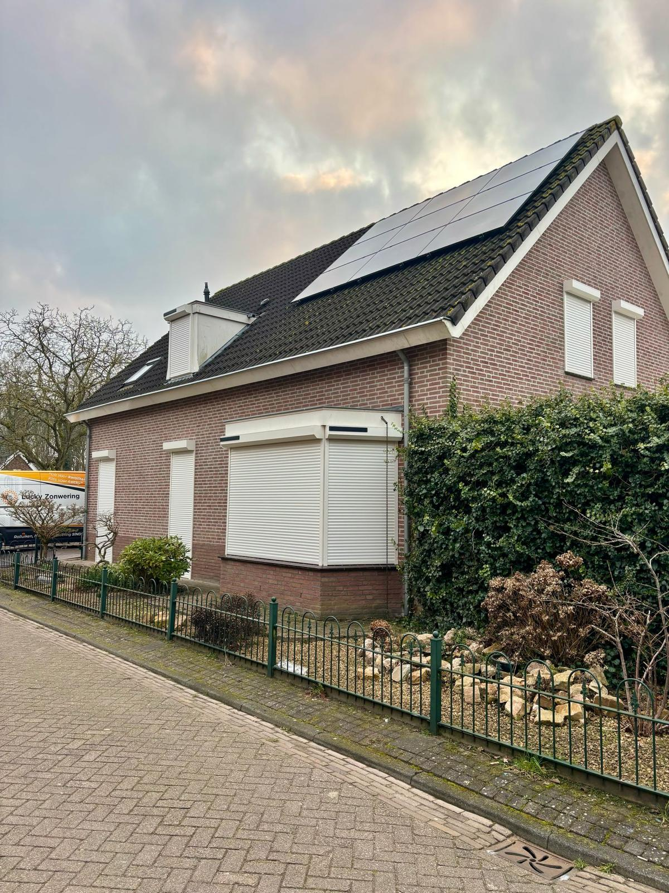

Lucky Zonwering maakt rolluiken op maat in de eigen werkplaats aan de Ussenstraat in Oss. Meer privacy, betere isolatie en extra inbraakwering, vakkundig geplaatst door onze eigen monteurs. Beoordeeld met een 5,0 op Google uit 124 reviews.
Rolluiken zijn een van onze specialiteiten — en als familiebedrijf maken wij ze al sinds 1975 zelf. Onze klanten in Oss kiezen voor rolluiken om uiteenlopende redenen: een donkere slaapkamer voor de nachtdienst, minder warmte op een hete zolderkamer, meer privacy aan een drukke straat of simpelweg een geruster gevoel als ze op vakantie zijn. Eén product, veel voordelen.
Omdat we de rolluiken in eigen huis produceren en met onze eigen monteurs plaatsen, heeft u maar één aanspreekpunt — van het inmeten tot de oplevering en de service daarna. Hieronder leest u alles over rolluiken in Oss.
Rolluiken zijn een veelzijdige investering die zich op meerdere fronten terugbetaalt. Dit zijn de belangrijkste voordelen voor uw woning in Oss:
Een dichtgedraaid rolluik maakt de slaapkamer volledig donker en houdt nieuwsgierige blikken buiten — ideaal aan de straatzijde of voor wie overdag slaapt.
De luchtlaag tussen het rolluik en het raam isoleert: in de zomer blijft de warmte buiten, in de winter de kou. Zo draagt een rolluik bij aan een lagere energierekening en meer comfort.
Een gesloten rolluik vormt een zichtbare, fysieke barrière die inbrekers ontmoedigt. Veel klanten ervaren simpelweg meer rust, zeker tijdens vakanties.
Handmatig met een band, elektrisch met schakelaar of afstandsbediening, of volledig draadloos op solar zonne-energie — zonder hak- en breekwerk. Slimme bediening via een app behoort eveneens tot de mogelijkheden.
Benieuwd naar de mogelijkheden en een richtprijs? Stel online uw rolluiken op maat samen of vraag direct een gratis offerte aan.
Elk rolluik wordt in onze eigen werkplaats in Oss op de millimeter nauwkeurig gemaakt en vóór de montage met de hand getest. Geen tussenhandel, maar maatwerk uit één hand — met een korte levertijd en een scherpe prijs.

Wij meten gratis bij u in Oss in en adviseren over kleur, lamel en bediening. Onze eigen monteurs plaatsen de rolluiken vervolgens netjes en veilig en laten uw woning schoon achter. Een storing? Dankzij onze eigen onderdelenvoorraad bent u snel weer geholpen.

Onze werkplaats en voorraad zitten aan de Ussenstraat 26A in Oss. Doordat we lokaal produceren én monteren, zijn de lijnen kort: we meten snel in, leveren op maat en blijven bereikbaar voor service. Veel Osse woningen — van vooroorlogse panden in het centrum tot moderne nieuwbouw — hebben wij al van rolluiken voorzien.
Naast Oss plaatsen wij dagelijks rolluiken in de omliggende dorpen en steden:
Bekijk gerust onze rolluikenprojecten in en rond Oss of lees waarom klanten voor Lucky kiezen.
Ja. Onze rolluiken worden in onze eigen werkplaats in Oss op maat gemaakt en vóór montage met de hand getest. Dat betekent een korte levertijd, een scherpe prijs en volledige controle over de kwaliteit.
Rolluiken vormen een fysieke barrière die inbraak ontmoedigt, verduisteren de slaapkamer en isoleren extra. In de zomer houden ze de warmte buiten, in de winter de kou — wat helpt bij het besparen op energie.
Zeker. Wij leveren handmatige, elektrische én solar rolluiken op zonne-energie, zonder hak- en breekwerk. Bediening kan met een schakelaar, afstandsbediening of via een app op uw telefoon.
Ja, wij monteren rolluiken bij zowel bestaande woningen als nieuwbouw. Onze monteurs bekijken bij het inmeten welke montagewijze het netst en sterkst is voor uw gevel.